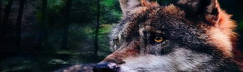

Inicio
Especies
Lobo gris
Lobo rojo
Lobo ártico
Lobo himalayo
Lobo indio
Lobo etíope
Lobo del Este
Información
Características de los lobos
¿Qué comen?
Hábitat y distribución
Reproducción de los lobos
Lobos en peligro de extinción
Lobos en España
Contacto